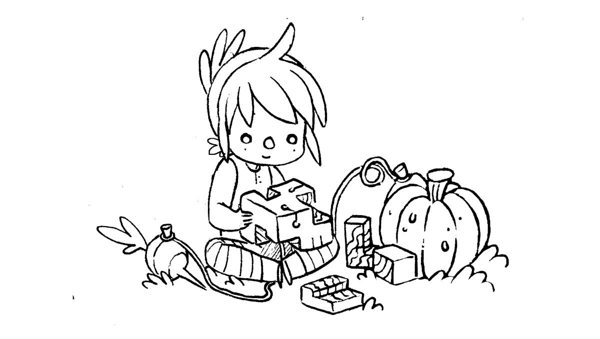

about

Hundred Rabbits is an artist collective that documents low-tech solutions with the hope of building a more resilient future. We live and work aboard a 10 m sailboat named Pino in remote parts of the world to learn more about how technology degrades beyond the shores of the western world.
If you like what we do, consider...
Supporting Our StudioFind out which tools we use, and see our studio's press appearances.
rabbits

- Receive monthly newsletter updates, or via RSS.
- Email us at rabbits ౷ 100r · co
- Visit our personal websites Kokorobot & XXIIVV.
- Follow us online: Rek & Neauoire
Rek(they/them/iel) is a writer, illustrator and cartoonist, Devine(they) is a programmer, artist and musician, Little Ninj is our mascot and overlord.
philosophy

We build software following these rules:
offline first
We build and design our software to work offline first. They will never need online resources to function properly, they will always be bundled with enough documentation to be repaired without our help. Our software will never be released behind any form of Digital Rights Management.
past proofing
We build simple tools to tackle specific tasks. We release builds and documentation to support a wide range of platforms, from native applications to terminal tools. We target 20 years old hardware as to encourage recyclism and discourage the consumption of fashionable electronics.
freedom
We release free and open-source programs so that they can be studied, inspected and repaired by anyone, anywhere. We create software and documentation for BSDs, GNU/Linux and Plan 9.
We are committed to fighting normative violence, fascism, colonialism, and racial supremacy in all of its forms. To undermine the capitalist structure and its abusive scripts about human worth in relation to work, productivity, and ownership. To subvert oppressive gender norms and put in question the binary. To actively unlearn biased and colonial thinking.
We are aggressively opposed to racism, sexism, homophobia, transphobia, speciesism, nationalism, ethnocentrism, religious fundamentalism, and oppressive and coercive power structures of all kinds. ~


mission
We founded Hundred Rabbits so we could dedicate our time to the creation of small, playful, free, open-source software, while considering the impact of our works on the environment, and optimizing toward living more sustainably. We've adapted our software and projects around the limitations of our vessel instead of increasing its limits. We learned to appreciate these limits and think that they make our work better.
The benefits of many modern technologies today are illusory, and undermine people's self-sufficiency, freedom, and dignity. Ivan Illich proposed the concept of "convivial tools" that honor human agency and creativity. Convivial tools are not proprietary, in the style of many software today, but open-ended, flexible instruments that serve the needs and interests of ordinary individuals and communities.
We want our work to be an equal blend of aesthetics, playfulness, and practicality. We aim to keep our software small, portable and build from first principles to keep them participatory.
website
Wiki. In April 2021, this website was converted into a wiki. This type of website is a kind of archive and mirror of everything that we have done, and that we have learnt. It's a living document that outlines where we've been, and a tool that advises where we could go. We append to the documentation of our projects regularly. You can download a copy of the entire website content and sources as a .zip.
We append to the documentation of our projects regularly. You can download a copy of the entire website content and sources as a .zip.
In all that is shared on the many pages populating this wiki, we reserve the right to be wrong, and to change our minds. We are always learning, and deepening our view and understanding of any one thing.
This wiki is statically generated from a small C89 program, the sources are available here, if you find a typo, a broken link or have a code specific question, feel free to open an issue.
This website has no tracking or analytics.
license
The license applies to all the documented projects, the projects themselves and their assets. The source code of this website and our apps are under the MIT License, but the assets and text content of this website and of our apps are under the BY-NC-SA4.0 License. We are happy to pass knowledge, and that others can learn from our projects, improve on them, or make them into something else that is useful.
DO NOT resell or mint our work, doing so is very lazy, and disrespectful to us.
You can find our more recent projects on Sourcehut.